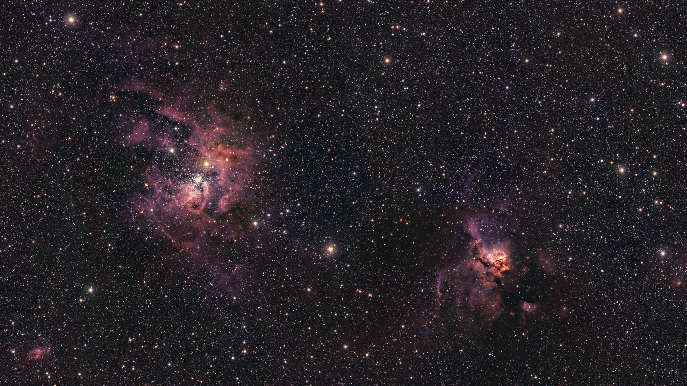
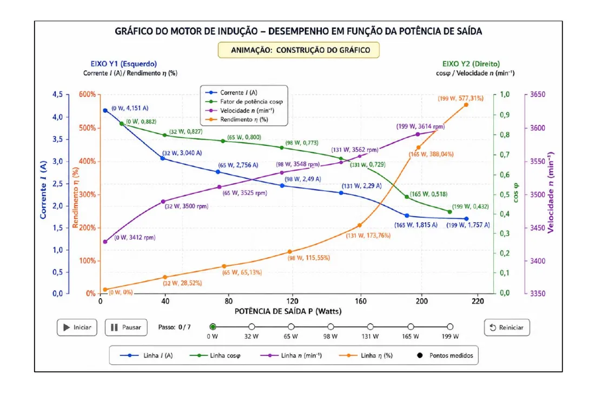

01
t = τ
Uma constante de tempo: ~63,2%
Em t = τ, o capacitor atinge cerca de 63,2% de Vs, porque 1 − e−1 ≈ 0,632.

Engenharia Elétrica e Física · gratuito
Foto: ESO (CC BY 4.0)
Sobre
Sou a Nina, estudante de Engenharia Elétrica no IFMT. Aqui transformo meus relatórios de laboratório e estudos em resumos diretos, com as equações e simulações que eu mesma fiz.
Circuitos elétricos Métodos numéricos em Python LaTeX Arduino Astrofísica
Circuitos elétricos
A tensão sobe rápido no começo e desacelera, sempre no ritmo da constante de tempo τ.
Carga
vC(t) = Vs (1 − e−t/RC)
Constante de tempo
τ = RC
Laboratório RC interativo
Ajuste Vs, R e C nos controles. Toque em Carregar para fechar a chave na fonte, em Descarregar para ligar o capacitor só ao resistor e em Pausar para congelar o tempo. Os elétrons andam mais rápido quanto maior a corrente.
Animação em tempo real.
01
t = τ
Em t = τ, o capacitor atinge cerca de 63,2% de Vs, porque 1 − e−1 ≈ 0,632.
02
t = 5τ
Em 5τ o capacitor é considerado carregado: cerca de 99,3% de Vs.
03
Descarga
Sem a fonte, a tensão cai a partir de V0: vC(t) = V0 e−t/RC.
04
Exemplo
τ = 10 000 Ω × 0,0001 F = 1 s.
Eletrônica de potência
Uma simulação mostra tensões, correntes e a resposta do sistema antes de montar o circuito: dá para conferir se os valores batem com o cálculo, achar erros de ligação e testar outros componentes sem queimar nada.


Métodos numéricos em Python
Dados três pontos (x0, y0), (x1, y1) e (x2, y2), o polinômio de Lagrange passa exatamente pelos três. Cada Li(x) vale 1 em xi e 0 nos outros pontos.
P(x) = Σi=02 yi Li(x)
Li(x) = Πj≠i (x − xj) / (xi − xj)
import numpy as np
def interp_quadratica(xs, ys, x):
total = 0
for i in range(3):
L = 1
for j in range(3):
if j != i:
L *= (x - xs[j]) / (xs[i] - xs[j])
total += ys[i] * L
return total
print(interp_quadratica([1, 2, 4], [1, 4, 16], 3)) # 9.0Os pontos estão em y = x², então P(3) = 9,0.
Playground de interpolação
Arraste os três pontos brilhantes; a parábola de Lagrange se redesenha na hora. Passe o mouse ou toque no gráfico para ler P(x) naquele x.
P(x) = 1,00x² + 0,00x + 0,00
Arduino e Tinkercad
Semáforo Arduino simulado
Toque em Ligar. O LED aceso brilha, os pontos mostram a corrente saindo do pino e a linha de código em execução fica destacada: verde 5 s, amarelo 2 s, vermelho 5 s, em loop.
Desligado
void loop() { digitalWrite(VERDE, HIGH); delay(5000); // verde 5 s digitalWrite(VERDE, LOW); digitalWrite(AMARELO, HIGH); delay(2000); // amarelo 2 s digitalWrite(AMARELO, LOW); digitalWrite(VERMELHO, HIGH); delay(5000); // vermelho 5 s digitalWrite(VERMELHO, LOW);}Cancela automática
Arraste a distância ou toque em Simular passagem. O sensor HC-SR04 mede o carro com ondas de ultrassom: abaixo de 20 cm a luz fica verde e a cancela sobe; acima, fica vermelha e fecha.
Cancela fechada
long d = medirDistancia(); // cmif (d < 20) servo.write(90); // abreelse servo.write(0); // fechaEscrever relatórios em LaTeX
Flash cards do universo
Gire o Sistema Solar com o mouse ou o dedo. Cada astro abre um flash card; vire o card para ver a resposta.
Arraste para girar · toque num planeta
Material recomendado
Links de afiliado: posso ganhar uma comissão, sem custo extra para você.
Visitantes
Contagem anônima pelo GoatCounter, sem cookies.